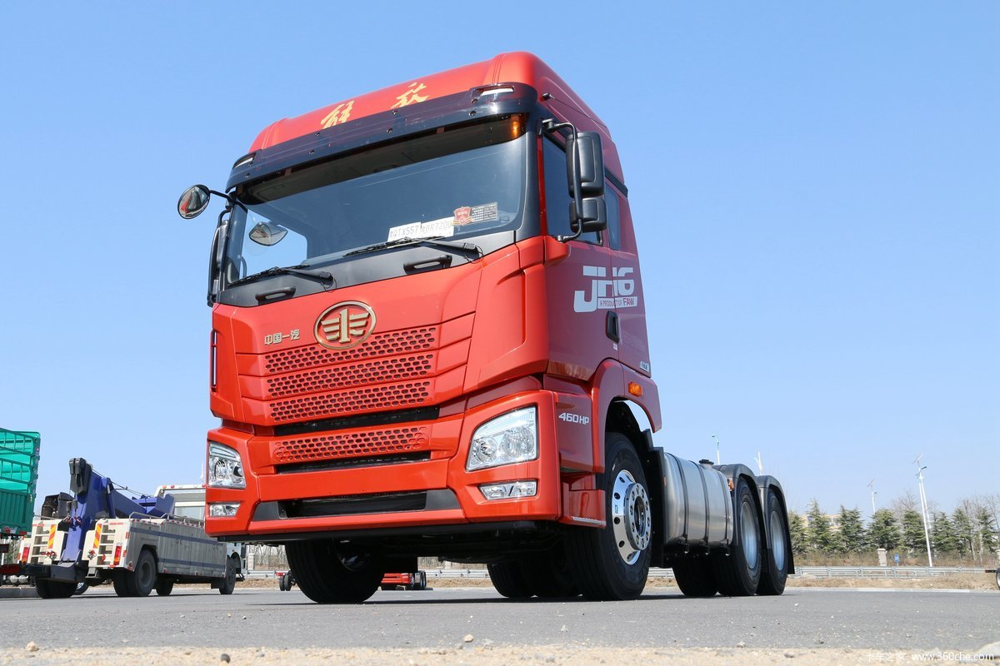
备选 · 未占槽 · 标准 · 高清1491.330.S34（6×6）牵引车（未占槽车型）
1200×800 · 裕量 +0.0607 · 部件 side_guard,headlamp,wheel_arch,step · 交付包 否
keep 单台重卡 +0.2814 ／ drop 多车队列 +0.2206
视角 side · gap 0.0080 · 门卫 v4
https://img4.kcimg.cn/imgc/0/750/750437.jpg!600
| 车型（✓=已占槽） | 总图 | 交付包 | 已核验 | 过门卫 | 概览 | 部件 | 参考 | 下载失败 |
|---|---|---|---|---|---|---|---|---|
| ✓ X3000 6×6 沙漠越野车 | 6 | 6 | 6 | 6 | 2 | 2 | 6 | 0 |
| ✓ Actros 4060 / 3355AS 6×6 大件牵引车 | 6 | 6 | 6 | 6 | 3 | 1 | 6 | 0 |
| ✓ Zetros 4051 AS 6×6 牵引车 | 5 | 5 | 5 | 5 | 3 | 1 | 5 | 0 |
| ✓ T-Way 540 6×6 牵引车 | 1 | 1 | 1 | 1 | 1 | 1 | 1 | 20 |
| ✓ HOWO 6×6 371hp 全轮驱动牵引车（出口版） | 6 | 6 | 5 | 6 | 0 | 0 | 6 | 0 |
| ✓ 天锦 DFV2223GP6DJ 6×6 越野底盘 | 5 | 5 | 5 | 5 | 0 | 0 | 5 | 4 |
| ✓ DFV5253TSMGP6D 6×6 沙漠车 | 4 | 4 | 4 | 4 | 0 | 0 | 4 | 0 |
| ✓ ND5250TSMZ04 沙漠车 | 5 | 4 | 4 | 4 | 0 | 0 | 4 | 0 |
| ✓ H6066 6×6 特种运输车 | 2 | 2 | 2 | 2 | 0 | 0 | 2 | 0 |
| ✓ Kerax 400 T XHD 6×6 牵引车 | 2 | 2 | 2 | 2 | 0 | 0 | 2 | 8 |
| ✓ EQ2250AX 六驱沙漠越野卡车 | 1 | 1 | 1 | 1 | 0 | 0 | 1 | 4 |
| ✓ HOWO TAZ4922 6×6 油田专用全驱牵引车（泰安五岳） | 1 | 1 | 0 | 1 | 0 | 0 | 1 | 0 |
| 1491.330.S34（6×6）牵引车 | 6 | 0 | 0 | 6 | 4 | 4 | 6 | 0 |
| 65225（65225-026）6×6 全驱牵引车 | 5 | 0 | 0 | 5 | 2 | 1 | 5 | 0 |
| Arocs 3351 / 3340 A 6×6 牵引车 | 6 | 0 | 0 | 6 | 0 | 0 | 6 | 0 |
| 豪沃TX 6×6 牵引车 ZZ4257V455GF1 | 6 | 0 | 0 | 5 | 2 | 0 | 5 | 0 |
| T105 6×6 沙漠车（50t级以上载运平台） | 4 | 0 | 2 | 4 | 0 | 0 | 4 | 8 |
| Phoenix 全驱牵引车（6×6系列） | 3 | 0 | 0 | 3 | 1 | 0 | 3 | 0 |
| Z80-609F 6×6 重型越野卡车 | 2 | 0 | 0 | 2 | 0 | 0 | 2 | 0 |
| 重汽五岳 特种牵引车（井场搬迁/模块转运系列） | 2 | 0 | 0 | 2 | 2 | 0 | 2 | 0 |
| V8 6×6 重型鞍式牵引车 | 1 | 0 | 0 | 1 | 0 | 0 | 1 | 0 |
| 6×6 全驱沙漠车（可改装油田专用车） | 0 | 0 | 0 | 0 | 0 | 0 | 0 | 12 |

备选 · 未占槽 · 标准 · 高清1200×800 · 裕量 +0.0607 · 部件 side_guard,headlamp,wheel_arch,step · 交付包 否
keep 单台重卡 +0.2814 ／ drop 多车队列 +0.2206
视角 side · gap 0.0080 · 门卫 v4
https://img4.kcimg.cn/imgc/0/750/750437.jpg!600
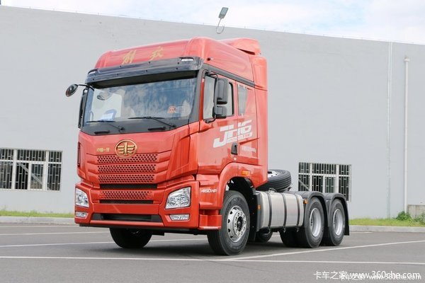
备选 · 未占槽 · 低清参考600×400 · 裕量 +0.0402 · 部件 side_guard,headlamp,wheel_arch,step · 交付包 否
keep 单台重卡 +0.2741 ／ drop 多车队列 +0.2338
视角 side · gap 0.0077 · 门卫 v4
长边 <800
分辨率/分层：长边 <800
https://img1.kcimg.cn/dealerimg/jpg/news/2020/01/15/93c23d4460924a42887b4fc0e5ba10ca.jpg!6
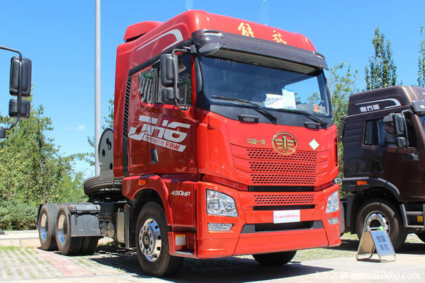
备选 · 未占槽 · 低清参考600×400 · 裕量 +0.0396 · 部件 side_guard,headlamp,wheel_arch,step · 交付包 否
keep 单台重卡 +0.2758 ／ drop 多车队列 +0.2362
视角 side · gap 0.0009 · 门卫 v4
长边 <800
分辨率/分层：长边 <800
https://img1.kcimg.cn/dealerimg/jpg/news/2019/05/27/63388efa2b4a4c22919774585902b06e.jpg!6
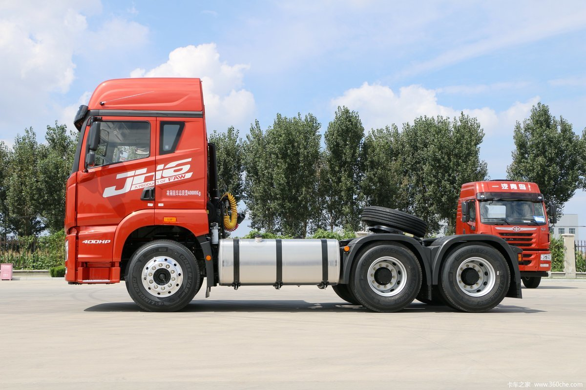
备选 · 未占槽 · 标准 · 高清1200×800 · 裕量 +0.0329 · 部件 side_guard,headlamp,wheel_arch,step · 交付包 否
keep 单台重卡 +0.2650 ／ drop 多车队列 +0.2321
视角 hero_45 · gap 0.0016 · 门卫 v4
https://img4.kcimg.cn/imgc/0/663/663200.jpg!600
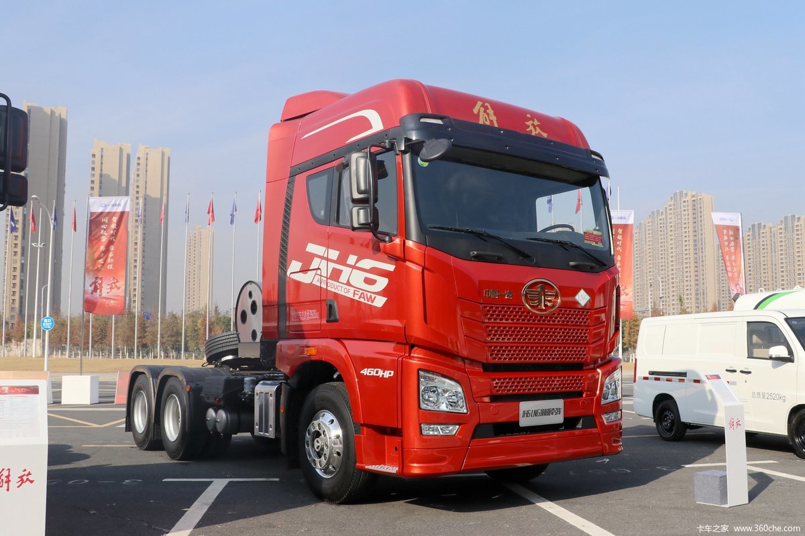
备选 · 未占槽 · 标准 · 高清1200×800 · 裕量 +0.0278 · 部件 side_guard,headlamp,wheel_arch,step · 交付包 否
keep 单台重卡 +0.2561 ／ drop 多车队列 +0.2283
视角 hero_45 · gap 0.0002 · 门卫 v4
https://img4.kcimg.cn/imgc/0/875/875436.jpg!600
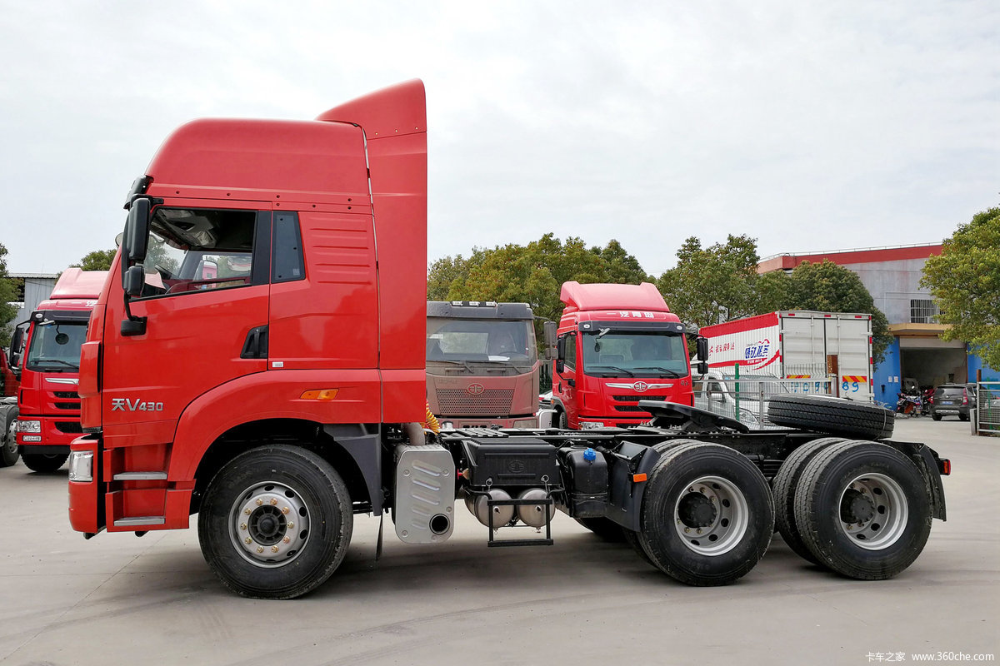
备选 · 未占槽 · 标准 · 高清1200×800 · 裕量 +0.0171 · 部件 side_guard,headlamp,wheel_arch,step · 交付包 否
keep 主体一台+背景车 +0.2621 ／ drop 多车队列 +0.2450
视角 hero_45 · gap 0.0065 · 门卫 v4
https://img4.kcimg.cn/imgc/0/471/471524.jpg!600
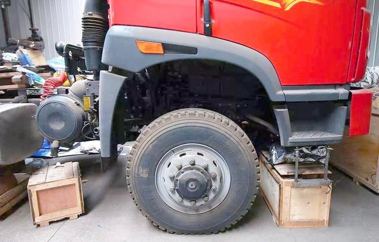
备选 · 未占槽 · 低清参考780×500 · 裕量 +0.0841 · 部件 side_guard,headlamp,wheel_arch,step · 交付包 否
keep 部件特写 +0.3756 ／ drop 多车队列 +0.2915
视角 detail · gap 0.0244 · 门卫 v4
长边 <800
分辨率/分层：长边 <800
https://img0.baidu.com/it/u=3858073700,1580565949&fm=253&fmt=auto&app=138&f=JPEG?w=780&h=5
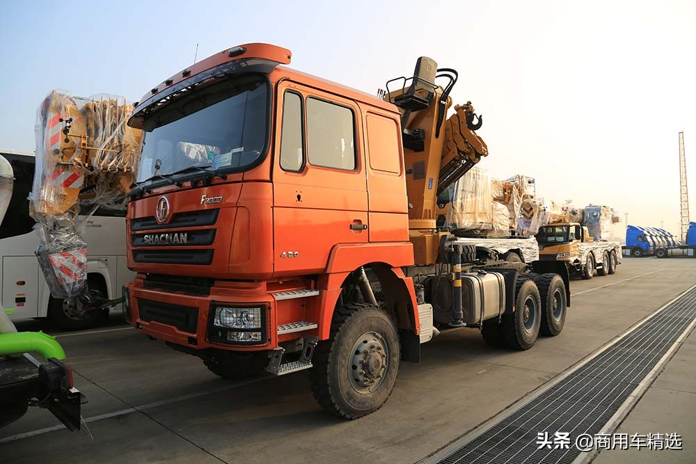
备选 · 未占槽 · 标准 · 低清参考1000×667 · 裕量 +0.0443 · 部件 side_guard,headlamp,wheel_arch,step · 交付包 否
keep 单台重卡 +0.2997 ／ drop 多车队列 +0.2554
视角 detail · gap 0.0029 · 门卫 v4
长边 <1200
分辨率/分层：长边 <1200
https://p1-tt.byteimg.com/origin/pgc-image/f38e32dbbb374a1cb494c641982b84c3?from=pc
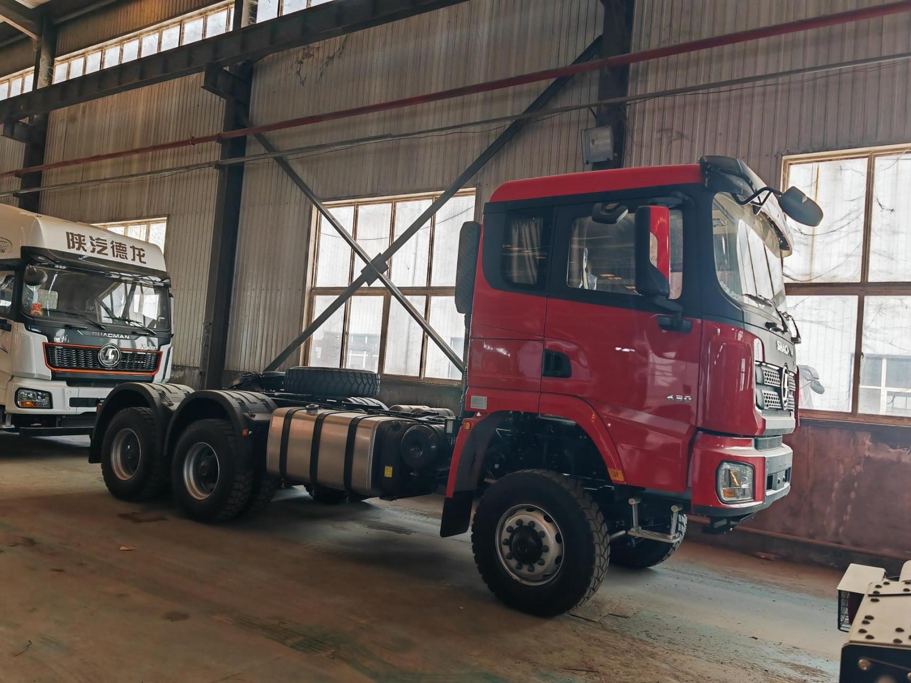
备选 · 未占槽 · 标准 · 高清1707×1280 · 裕量 +0.0408 · 部件 side_guard,headlamp,wheel_arch,step · 交付包 否
keep 主体一台+背景车 +0.2583 ／ drop 多车队列 +0.2174
视角 hero_45 · gap 0.0090 · 门卫 v4
https://b0.bdstatic.com/e9b5881d76f5bf44a618798140c63176.jpeg@h_1280
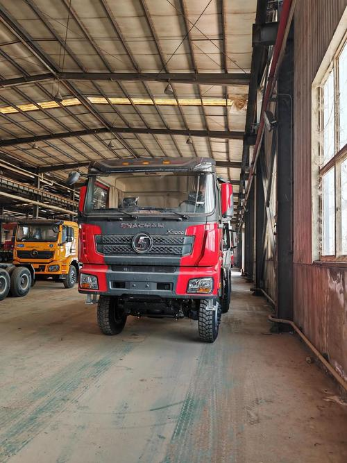
备选 · 未占槽 · 低清参考500×667 · 裕量 +0.0362 · 部件 side_guard,headlamp,wheel_arch,step · 交付包 否
keep 主体一台+背景车 +0.3650 ／ drop 多车队列 +0.3288
视角 rear · gap 0.0031 · 门卫 v4
长边 <800
分辨率/分层：长边 <800
https://img1.baidu.com/it/u=3832049743,2167583767&fm=253&fmt=auto&app=138&f=JPEG?w=500&h=6
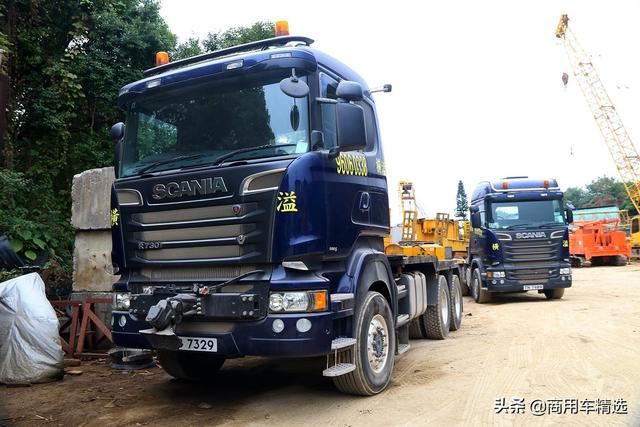
备选 · 未占槽 · 低清参考640×427 · 裕量 +0.0075 · 部件 side_guard,headlamp,wheel_arch,step · 交付包 否
keep 主体一台+背景车 +0.3456 ／ drop 多车队列 +0.3382
视角 rear · gap 0.0020 · 门卫 v4
长边 <800
分辨率/分层：长边 <800
http://5b0988e595225.cdn.sohucs.com/images/20200101/82e1d59f5de8415b8e0a5eda69f8953f.jpeg
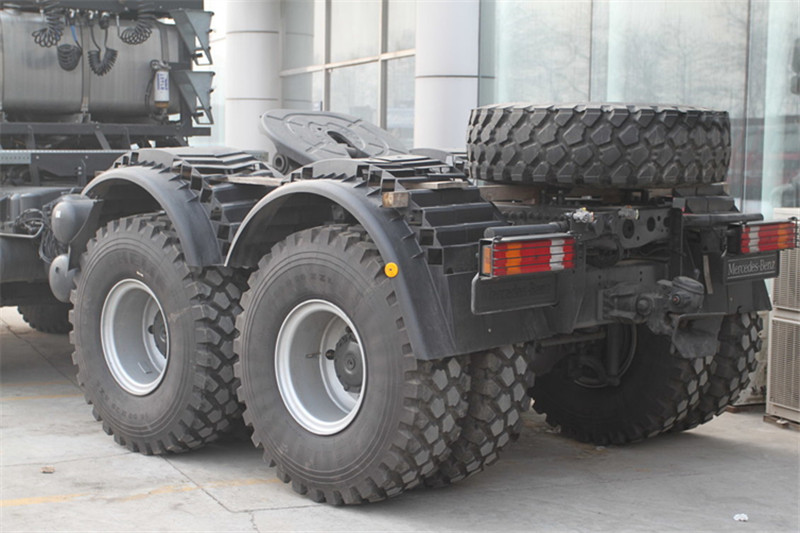
已交付 · 已核验 · 标准 · 低清参考800×533 · 裕量 +0.0638 · 部件 side_guard,headlamp,wheel_arch,step · 交付包 是
keep 部件特写 +0.2757 ／ drop 多车队列 +0.2120
视角 detail · gap 0.0035 · 门卫 v4
长边 <1200
分辨率/分层：长边 <1200
https://www.automotive.org.cn/uploadfile/truck/2017/0708/20170708104243137.jpg
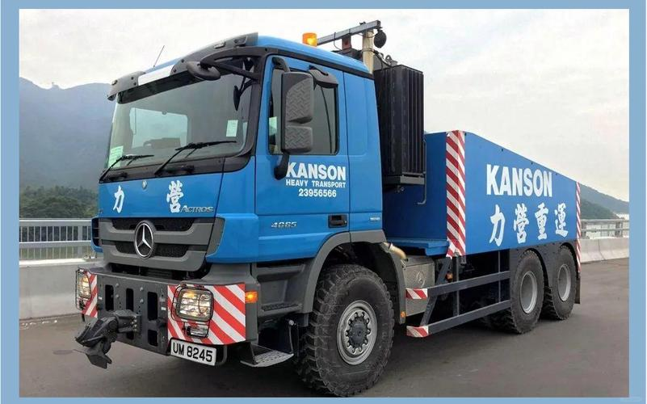
已交付 · 已核验 · 标准 · 低清参考801×500 · 裕量 +0.0468 · 部件 side_guard,headlamp,wheel_arch,step · 交付包 是
keep 主体一台+背景车 +0.3555 ／ drop 多车队列 +0.3087
视角 side · gap 0.0025 · 门卫 v4
长边 <1200
分辨率/分层：长边 <1200
https://img1.baidu.com/it/u=1583598145,3322085183&fm=253&fmt=auto&app=138&f=JPEG?w=801&h=5
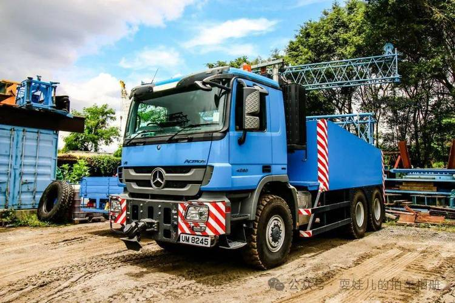
已交付 · 已核验 · 低清参考750×500 · 裕量 +0.0358 · 部件 side_guard,headlamp,wheel_arch,step · 交付包 是
keep 主体一台+背景车 +0.3468 ／ drop 多车队列 +0.3111
视角 rear · gap 0.0028 · 门卫 v4
长边 <800
分辨率/分层：长边 <800
https://img2.baidu.com/it/u=1698447540,3238093453&fm=253&fmt=auto&app=138&f=JPEG?w=750&h=5
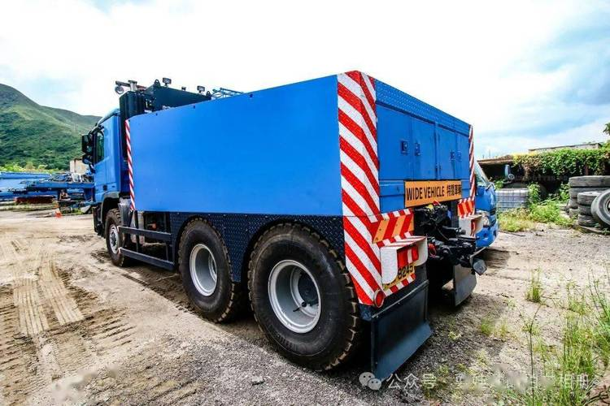
已交付 · 已核验 · 低清参考750×500 · 裕量 +0.0329 · 部件 side_guard,headlamp,wheel_arch,step · 交付包 是
keep 主体一台+背景车 +0.3526 ／ drop 多车队列 +0.3197
视角 side · gap 0.0046 · 门卫 v4
长边 <800
分辨率/分层：长边 <800
https://img0.baidu.com/it/u=426004319,1106234184&fm=253&fmt=auto&app=138&f=JPEG?w=750&h=50
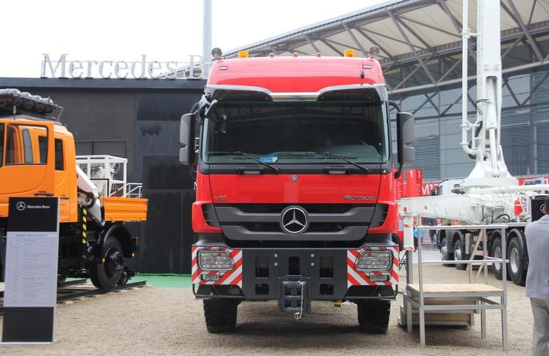
已交付 · 已核验 · 低清参考771×500 · 裕量 +0.0299 · 部件 side_guard,headlamp,wheel_arch,step · 交付包 是
keep 主体一台+背景车 +0.3461 ／ drop 多车队列 +0.3162
视角 front · gap 0.0019 · 门卫 v4
长边 <800
分辨率/分层：长边 <800
https://img1.baidu.com/it/u=4181165577,2082073965&fm=253&fmt=auto&app=138&f=JPEG?w=771&h=5
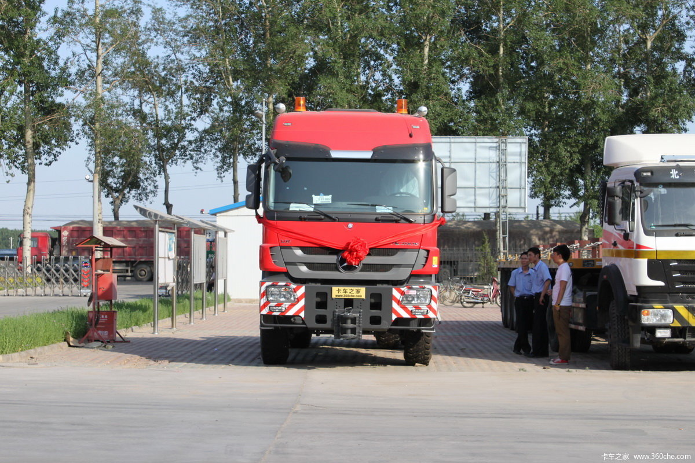
已交付 · 已核验 · 标准 · 高清1200×800 · 裕量 +0.0200 · 部件 side_guard,headlamp,wheel_arch,step · 交付包 是
keep 单台重卡 +0.2358 ／ drop 多车队列 +0.2158
视角 front · gap 0.0011 · 门卫 v4
http://imgh.360che.com/imgc/0/59/59384.jpg!150
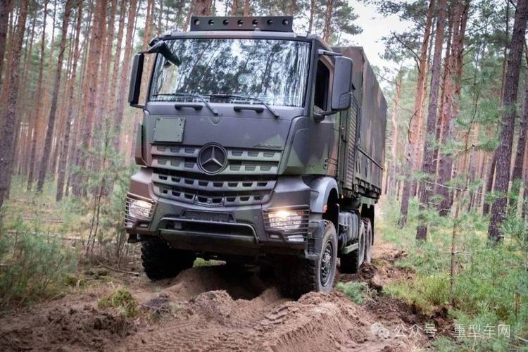
备选 · 未占槽 · 低清参考750×500 · 裕量 +0.0777 · 部件 side_guard,headlamp,wheel_arch,step · 交付包 否
keep 单台重卡 +0.3210 ／ drop 内饰舱 +0.2434
视角 rear · gap 0.0157 · 门卫 v4
长边 <800
分辨率/分层：长边 <800
https://img0.baidu.com/it/u=2572729046,4001513513&fm=253&fmt=auto&app=138&f=JPEG?w=750&h=5
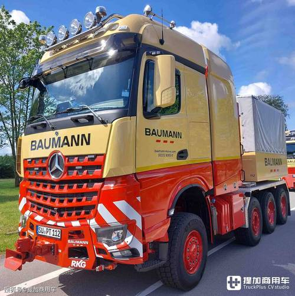
备选 · 未占槽 · 低清参考500×502 · 裕量 +0.0457 · 部件 side_guard,headlamp,wheel_arch,step · 交付包 否
keep 单台重卡 +0.3673 ／ drop 多车队列 +0.3215
视角 front · gap 0.0044 · 门卫 v4
长边 <800
分辨率/分层：长边 <800
https://img0.baidu.com/it/u=1094476346,2072690728&fm=253&fmt=auto&app=138&f=JPEG?w=500&h=5
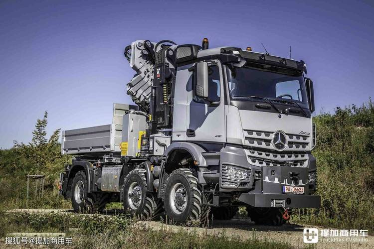
备选 · 未占槽 · 低清参考750×500 · 裕量 +0.0395 · 部件 side_guard,headlamp,wheel_arch,step · 交付包 否
keep 单台重卡 +0.3689 ／ drop 多车队列 +0.3294
视角 front · gap 0.0005 · 门卫 v4
长边 <800
分辨率/分层：长边 <800
https://img0.baidu.com/it/u=543612127,3420186642&fm=253&fmt=auto&app=138&f=JPEG?w=750&h=50
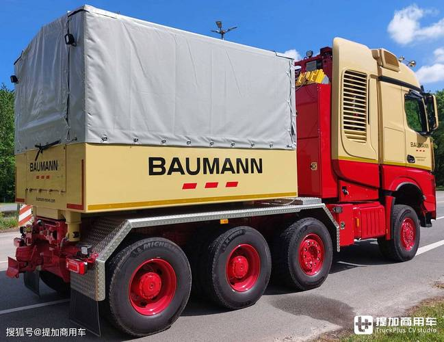
备选 · 未占槽 · 低清参考649×500 · 裕量 +0.0295 · 部件 side_guard,headlamp,wheel_arch,step · 交付包 否
keep 单台重卡 +0.3502 ／ drop 多车队列 +0.3206
视角 side · gap 0.0110 · 门卫 v4
长边 <800
分辨率/分层：长边 <800
https://img1.baidu.com/it/u=582885121,4066395572&fm=253&fmt=auto&app=138&f=JPEG?w=649&h=50
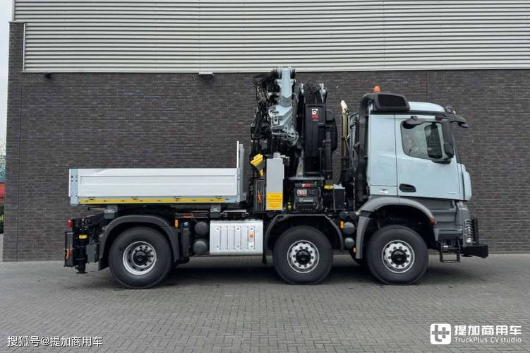
备选 · 未占槽 · 低清参考751×500 · 裕量 +0.0200 · 部件 side_guard,headlamp,wheel_arch,step · 交付包 否
keep 单台重卡 +0.3537 ／ drop 多车队列 +0.3337
视角 front · gap 0.0040 · 门卫 v4
长边 <800
分辨率/分层：长边 <800
https://img1.baidu.com/it/u=4031139579,3059349624&fm=253&fmt=auto&app=138&f=JPEG?w=751&h=5
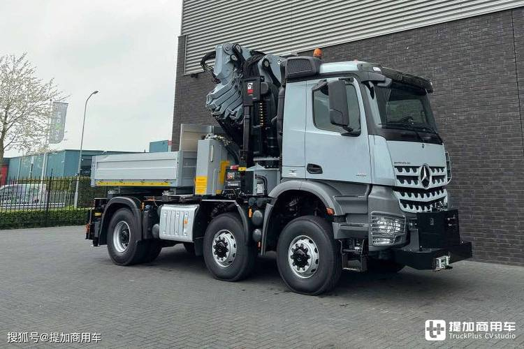
备选 · 未占槽 · 低清参考750×500 · 裕量 +0.0185 · 部件 side_guard,headlamp,wheel_arch,step · 交付包 否
keep 主体一台+背景车 +0.3577 ／ drop 多车队列 +0.3392
视角 front · gap 0.0064 · 门卫 v4
长边 <800
分辨率/分层：长边 <800
https://img2.baidu.com/it/u=1545521229,2457327747&fm=253&fmt=auto&app=138&f=JPEG?w=750&h=5
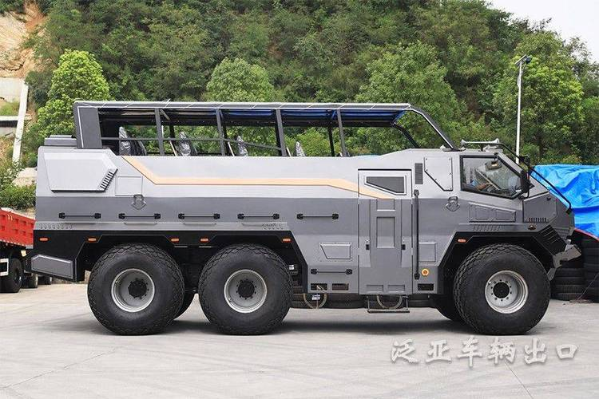
已交付 · 已核验 · 低清参考750×500 · 裕量 +0.0448 · 部件 side_guard,headlamp,wheel_arch,step · 交付包 是
keep 部件特写 +0.3408 ／ drop 多车队列 +0.2961
视角 side · gap 0.0033 · 门卫 v4
长边 <800
分辨率/分层：长边 <800
https://img0.baidu.com/it/u=660225392,203644253&fm=253&fmt=auto&app=138&f=JPEG?w=750&h=500
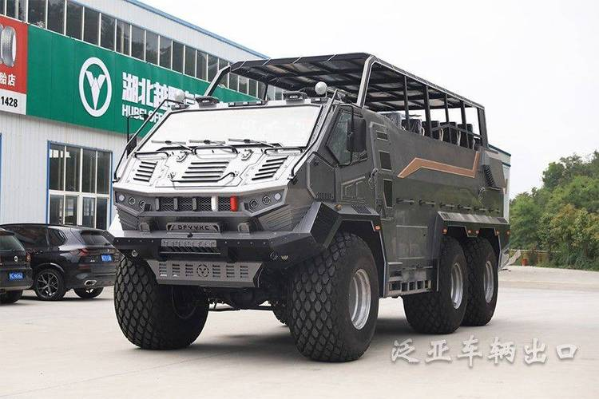
已交付 · 已核验 · 低清参考750×500 · 裕量 +0.0303 · 部件 side_guard,headlamp,wheel_arch,step · 交付包 是
keep 主体一台+背景车 +0.3446 ／ drop 多车队列 +0.3143
视角 front · gap 0.0011 · 门卫 v4
长边 <800
分辨率/分层：长边 <800
https://img2.baidu.com/it/u=1618901127,2923970838&fm=253&fmt=auto&app=138&f=JPEG?w=750&h=5
 已交付 · 已核验 · 低清参考
已交付 · 已核验 · 低清参考750×500 · 裕量 +0.0288 · 部件 side_guard,headlamp,wheel_arch,step · 交付包 是
keep 单台重卡 +0.3434 ／ drop 多车队列 +0.3145
视角 hero_45 · gap 0.0012 · 门卫 v4
长边 <800
分辨率/分层：长边 <800
https://img2.baidu.com/it/u=2902416878,3509199199&fm=253&fmt=auto&app=138&f=JPEG?w=750&h=5
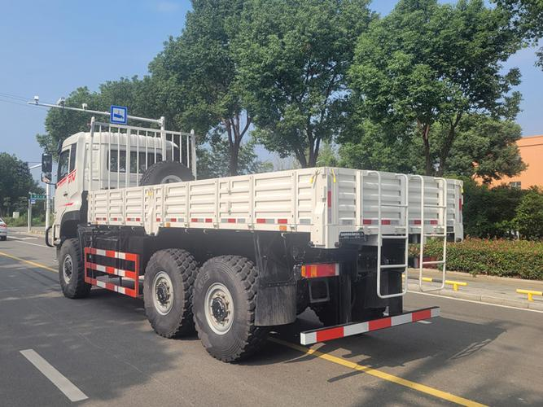
已交付 · 已核验 · 低清参考667×500 · 裕量 +0.0263 · 部件 side_guard,headlamp,wheel_arch,step · 交付包 是
keep 单台重卡 +0.3204 ／ drop 多车队列 +0.2941
视角 hero_45 · gap 0.0000 · 门卫 v4
长边 <800
分辨率/分层：长边 <800
https://img0.baidu.com/it/u=228489721,3947666251&fm=253&fmt=auto&app=138&f=JPEG?w=667&h=50
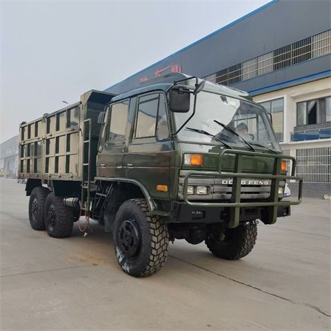
已交付 · 已核验 · 低清参考480×480 · 裕量 +0.0364 · 部件 side_guard,headlamp,wheel_arch,step · 交付包 是
keep 主体一台+背景车 +0.3369 ／ drop 多车队列 +0.3004
视角 front · gap 0.0066 · 门卫 v4
长边 <800
分辨率/分层：长边 <800
https://t10.baidu.com/it/u=852192264,3481855241&fm=199&app=68&f=JPEG?w=480&h=480&s=F3A69B4
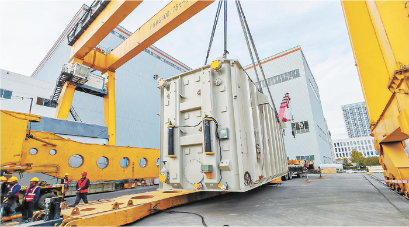
已交付 · 已核验 · 低清参考700×389 · 裕量 +0.0990 · 部件 side_guard,headlamp,wheel_arch,step · 交付包 是
keep 工程车 +0.3039 ／ drop 多车队列 +0.2049
视角 detail · gap 0.0242 · 门卫 v4
长边 <800
分辨率/分层：长边 <800
https://k.sinaimg.cn/n/sinakd20110/785/w2048h1137/20241107/5a98-b850af4e70b253879402983c1a
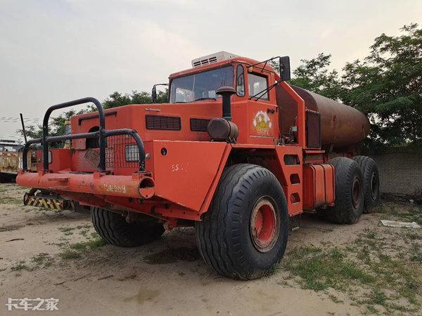
已交付 · 已核验 · 低清参考600×450 · 裕量 +0.0749 · 部件 side_guard,headlamp,wheel_arch,step · 交付包 是
keep 单台重卡 +0.3535 ／ drop 多车队列 +0.2785
视角 rear · gap 0.0001 · 门卫 v4
长边 <800
分辨率/分层：长边 <800
https://t10.baidu.com/it/u=3714538125,2748883997&fm=173&app=49&f=JPEG?w=600&h=450&s=B9B04B
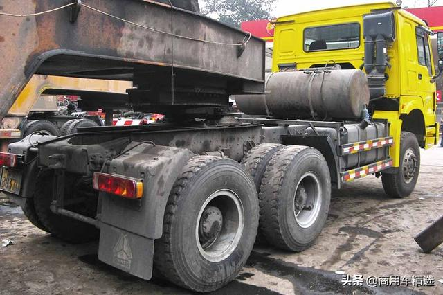
已交付 · 已核验 · 低清参考640×426 · 裕量 +0.0366 · 部件 side_guard,headlamp,wheel_arch,step · 交付包 是
keep 主体一台+背景车 +0.3644 ／ drop 多车队列 +0.3278
视角 detail · gap 0.0042 · 门卫 v4
长边 <800
分辨率/分层：长边 <800
http://5b0988e595225.cdn.sohucs.com/images/20190105/ee0bbc668dbc43279c5d3f943c9e5b9e.jpeg
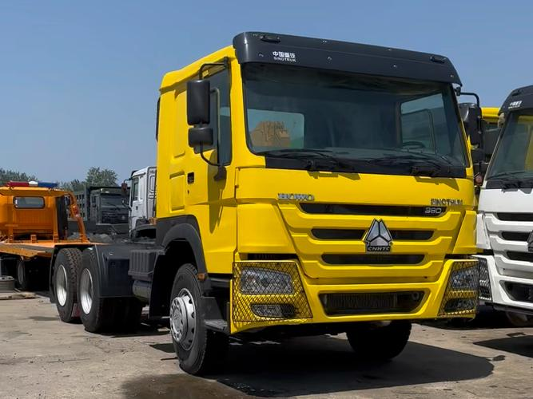
已交付 · 已核验 · 低清参考667×500 · 裕量 +0.0358 · 部件 side_guard,headlamp,wheel_arch,step · 交付包 是
keep 主体一台+背景车 +0.3751 ／ drop 多车队列 +0.3393
视角 side · gap 0.0029 · 门卫 v4
长边 <800
分辨率/分层：长边 <800
https://img0.baidu.com/it/u=2634309189,2654526959&fm=253&fmt=auto&app=120&f=JPEG?w=667&h=5
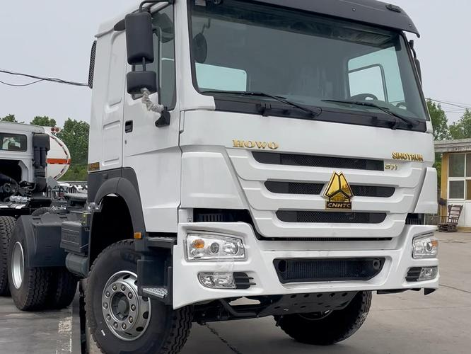
已交付 · 已核验 · 低清参考666×500 · 裕量 +0.0337 · 部件 side_guard,headlamp,wheel_arch,step · 交付包 是
keep 主体一台+背景车 +0.3770 ／ drop 多车队列 +0.3433
视角 front · gap 0.0022 · 门卫 v4
长边 <800
分辨率/分层：长边 <800
https://img1.baidu.com/it/u=4084046095,3103606858&fm=253&fmt=auto&app=120&f=JPEG?w=666&h=5
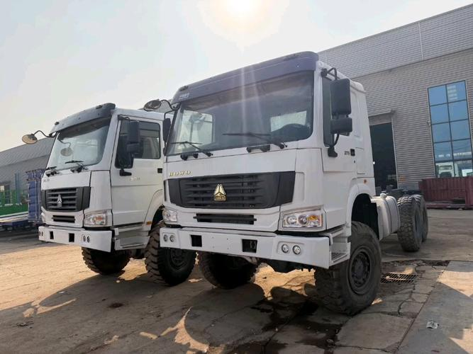
已交付 · 已核验 · 低清参考667×500 · 裕量 +0.0289 · 部件 side_guard,headlamp,wheel_arch,step · 交付包 是
keep 主体一台+背景车 +0.3684 ／ drop 多车队列 +0.3395
视角 front · gap 0.0011 · 门卫 v4
长边 <800
分辨率/分层：长边 <800
https://img2.baidu.com/it/u=3937500646,202303294&fm=253&fmt=auto&app=120&f=JPEG?w=667&h=50
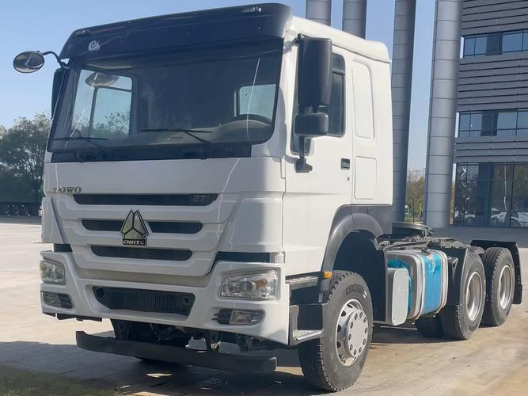
已交付 · 未核验 · 低清参考667×500 · 裕量 +0.0191 · 部件 side_guard,headlamp,wheel_arch,step · 交付包 是
keep 主体一台+背景车 +0.3537 ／ drop 多车队列 +0.3346
视角 side · gap 0.0038 · 门卫 v4
长边 <800
分辨率/分层：长边 <800
https://img0.baidu.com/it/u=1053664903,4165814764&fm=253&fmt=auto&app=120&f=JPEG?w=667&h=5
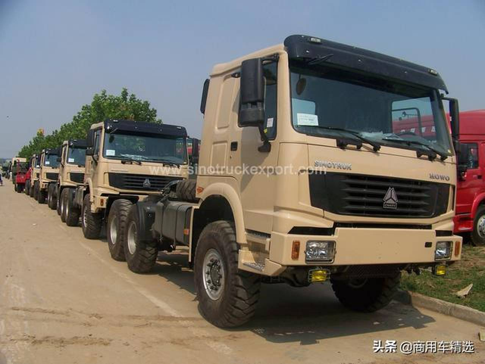
已交付 · 已核验 · 低清参考1280×962 · 裕量 +0.0004 · 部件 side_guard,headlamp,wheel_arch,step · 交付包 是
keep 主体一台+背景车 +0.3533 ／ drop 多车队列 +0.3529
视角 side · gap 0.0050 · 门卫 v4
http://5b0988e595225.cdn.sohucs.com/q_70,c_zoom,w_640/images/20190105/f49c0313d119447a8903
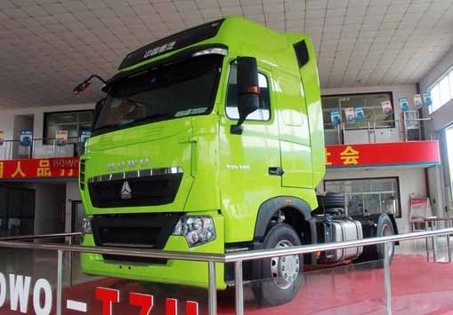
已交付 · 未核验 · 低清参考509×355 · 裕量 +0.0400 · 部件 side_guard,headlamp,wheel_arch,step · 交付包 是
keep 主体一台+背景车 +0.3572 ／ drop 多车队列 +0.3172
视角 front · gap 0.0017 · 门卫 v4
长边 <800
分辨率/分层：长边 <800
http://www.cn-truck.com/uploadfile/2015/0924/20150924084331316.jpeg
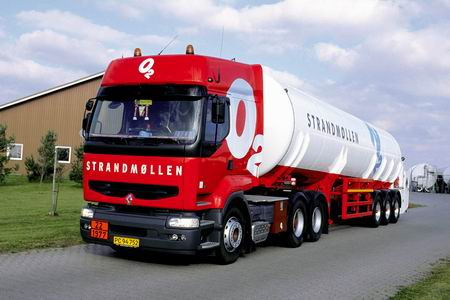
已交付 · 已核验 · 低清参考450×300 · 裕量 +0.0340 · 部件 side_guard,headlamp,wheel_arch,step · 交付包 是
keep 单台重卡 +0.3499 ／ drop 多车队列 +0.3159
视角 rear · gap 0.0012 · 门卫 v4
长边 <800
分辨率/分层：长边 <800
http://i2.sinaimg.cn/qc/news/2004-05-24/U644P33T2D65867F9DT20040524142634.jpg
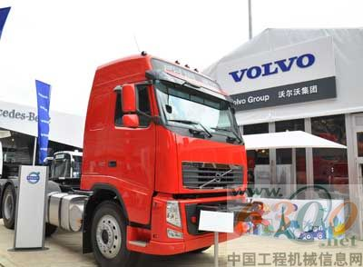
已交付 · 已核验 · 低清参考400×294 · 裕量 +0.0336 · 部件 side_guard,headlamp,wheel_arch,step · 交付包 是
keep 主体一台+背景车 +0.3635 ／ drop 多车队列 +0.3299
视角 front · gap 0.0062 · 门卫 v4
长边 <800
分辨率/分层：长边 <800
http://www.6300.net/uploadfile/Information/uploadfile/201104/20110422110803999.jpg
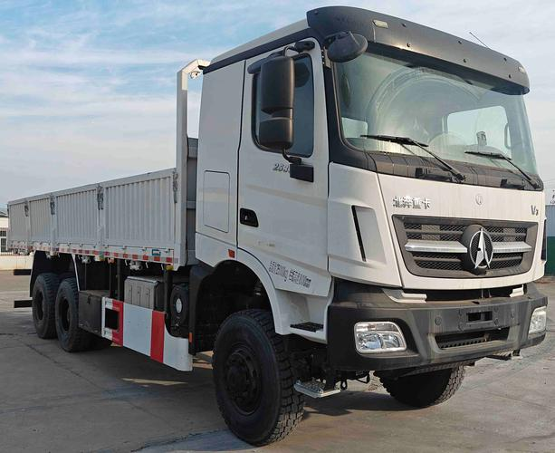
已交付 · 已核验 · 低清参考613×500 · 裕量 +0.0286 · 部件 side_guard,headlamp,wheel_arch,step · 交付包 是
keep 单台重卡 +0.3668 ／ drop 多车队列 +0.3382
视角 side · gap 0.0049 · 门卫 v4
长边 <800
分辨率/分层：长边 <800
https://img2.baidu.com/it/u=3718862202,3444995821&fm=253&fmt=auto&app=138&f=JPEG?w=613&h=5
 已交付 · 已核验 · 低清参考
已交付 · 已核验 · 低清参考667×500 · 裕量 +0.0244 · 部件 side_guard,headlamp,wheel_arch,step · 交付包 是
keep 工程车 +0.3123 ／ drop 多车队列 +0.2879
视角 hero_45 · gap 0.0004 · 门卫 v4
长边 <800
分辨率/分层：长边 <800
https://img1.baidu.com/it/u=1608489552,2364136365&fm=253&fmt=auto&app=138&f=JPEG?w=667&h=5
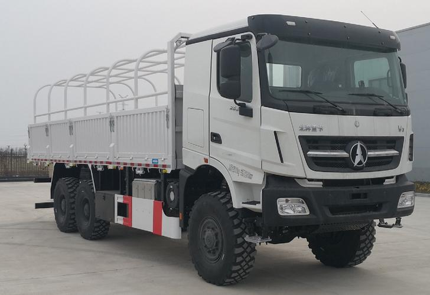
已交付 · 已核验 · 低清参考728×500 · 裕量 +0.0177 · 部件 side_guard,headlamp,wheel_arch,step · 交付包 是
keep 主体一台+背景车 +0.3699 ／ drop 多车队列 +0.3522
视角 side · gap 0.0045 · 门卫 v4
长边 <800
分辨率/分层：长边 <800
https://img2.baidu.com/it/u=4053804024,2587867596&fm=253&fmt=auto&app=138&f=JPEG?w=728&h=5
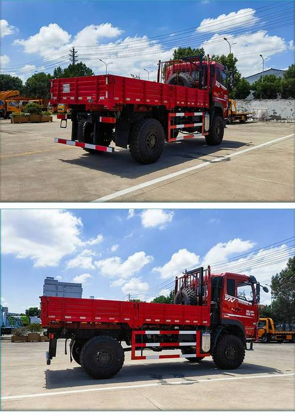
已交付 · 已核验 · 低清参考500×707 · 裕量 +0.0045 · 部件 side_guard,headlamp,wheel_arch,step · 交付包 是
keep 部件特写 +0.3435 ／ drop 网格拼图 +0.3390
视角 hero_45 · gap 0.0116 · 门卫 v4
长边 <800
分辨率/分层：长边 <800
https://img1.baidu.com/it/u=1587140316,3331282088&fm=253&fmt=auto&app=138&f=JPEG?w=500&h=7
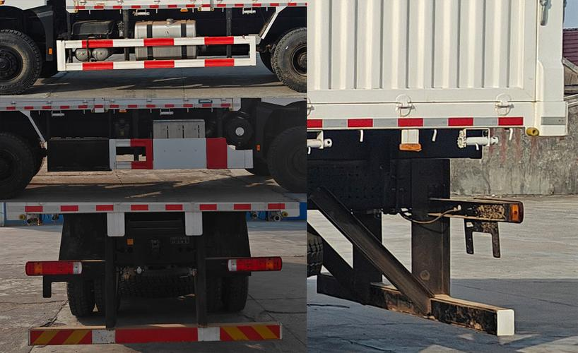
未过门卫818×500 · 裕量 -0.0113 · 部件 side_guard,headlamp,wheel_arch,step · 交付包 否
keep 部件特写 +0.3351 ／ drop 网格拼图 +0.3465
视角 — · gap 0.0000 · 门卫 v4
CLIP 反例胜出
CLIP 拒绝：“网格拼图”胜出（-0.0113 = keep 部件特写 +0.3351 − drop 网格拼图 +0.3465）
https://img0.baidu.com/it/u=79602482,2446048401&fm=253&fmt=auto&app=138&f=JPEG?w=818&h=500
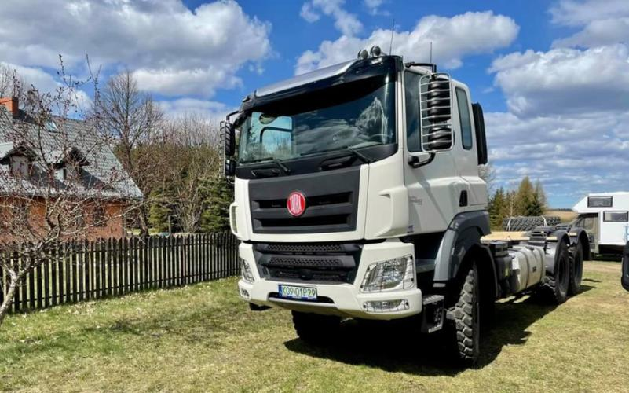
备选 · 未占槽 · 标准 · 低清参考801×500 · 裕量 +0.0370 · 部件 side_guard,headlamp,wheel_arch,step · 交付包 否
keep 单台重卡 +0.3590 ／ drop 多车队列 +0.3220
视角 front · gap 0.0075 · 门卫 v4
长边 <1200
分辨率/分层：长边 <1200
https://img2.baidu.com/it/u=2998341130,1127150452&fm=253&fmt=auto&app=120&f=JPEG?w=801&h=5
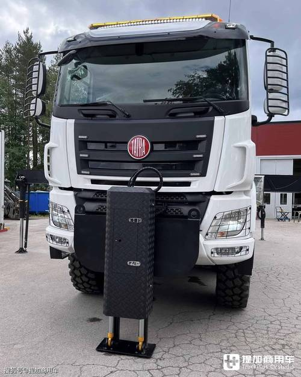
备选 · 未占槽 · 低清参考500×625 · 裕量 +0.0361 · 部件 side_guard,headlamp,wheel_arch,step · 交付包 否
keep 主体一台+背景车 +0.3764 ／ drop 多车队列 +0.3403
视角 front · gap 0.0094 · 门卫 v4
长边 <800
分辨率/分层：长边 <800
https://img1.baidu.com/it/u=644757536,1312653694&fm=253&fmt=auto&app=138&f=JPEG?w=500&h=62
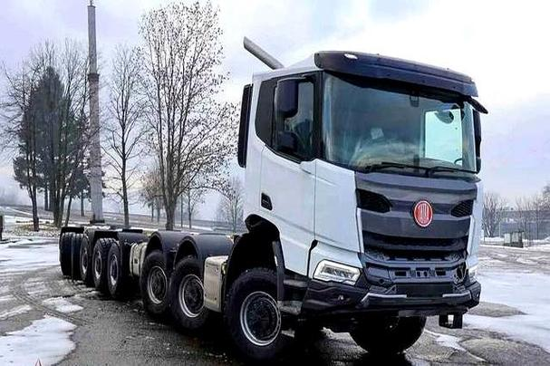
备选 · 未占槽 · 低清参考607×404 · 裕量 +0.0121 · 部件 side_guard,headlamp,wheel_arch,step · 交付包 否
keep 主体一台+背景车 +0.3709 ／ drop 多车队列 +0.3588
视角 front · gap 0.0026 · 门卫 v4
长边 <800
分辨率/分层：长边 <800
https://img1.baidu.com/it/u=1206323269,3867549857&fm=253&fmt=auto&app=138&f=JPEG?w=607&h=4
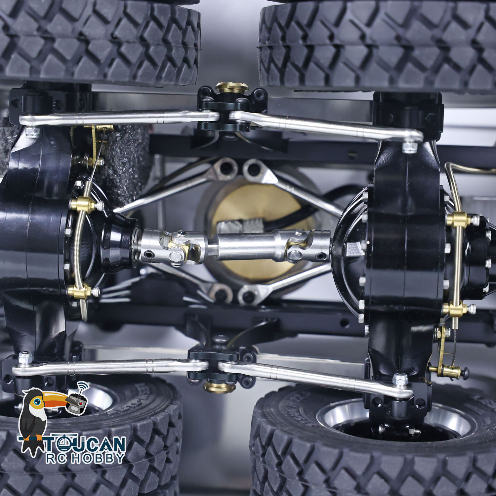
已交付 · 已核验 · 标准 · 高清1500×1500 · 裕量 +0.0401 · 部件 side_guard,headlamp,wheel_arch,step · 交付包 是
keep 部件特写 +0.2686 ／ drop 网格拼图 +0.2285
视角 detail · gap 0.0468 · 门卫 v4
https://img4.dhresource.com/f3/albu/jc/s/12/383648cc-53db-4282-925b-92e809f3a032.jpg
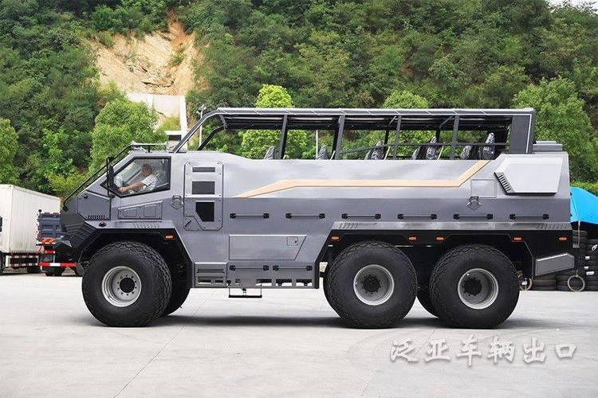
备选 · 未占槽 · 低清参考750×500 · 裕量 +0.0417 · 部件 side_guard,headlamp,wheel_arch,step · 交付包 否
keep 部件特写 +0.3205 ／ drop 网格拼图 +0.2788
视角 side · gap 0.0019 · 门卫 v4
长边 <800
分辨率/分层：长边 <800
https://img1.baidu.com/it/u=1777779518,331601516&fm=253&fmt=auto&app=138&f=JPEG?w=750&h=50
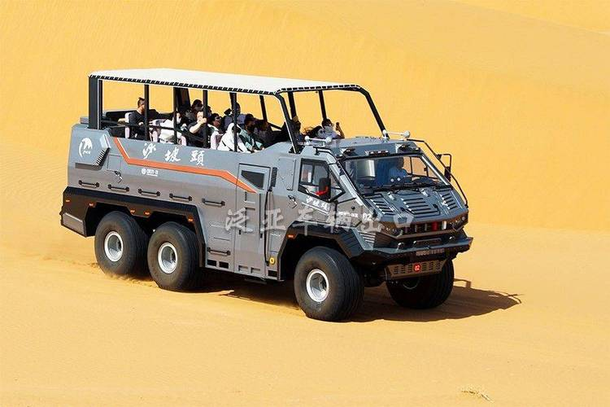
备选 · 未占槽 · 低清参考750×500 · 裕量 +0.0327 · 部件 side_guard,headlamp,wheel_arch,step · 交付包 否
keep 单台重卡 +0.3125 ／ drop 多车队列 +0.2798
视角 side · gap 0.0057 · 门卫 v4
长边 <800
分辨率/分层：长边 <800
https://img1.baidu.com/it/u=357785519,1521511399&fm=253&fmt=auto&app=120&f=JPEG?w=750&h=50
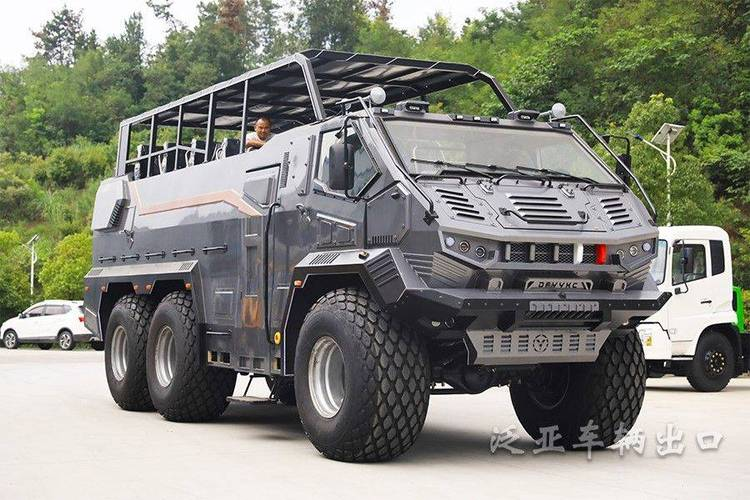
已交付 · 已核验 · 低清参考750×500 · 裕量 +0.0288 · 部件 side_guard,headlamp,wheel_arch,step · 交付包 否
keep 单台重卡 +0.3434 ／ drop 多车队列 +0.3145
视角 hero_45 · gap 0.0012 · 门卫 v4
长边 <800
分辨率/分层：长边 <800
https://img2.baidu.com/it/u=2902416878,3509199199&fm=253&fmt=auto&app=138&f=JPEG?w=750&h=5
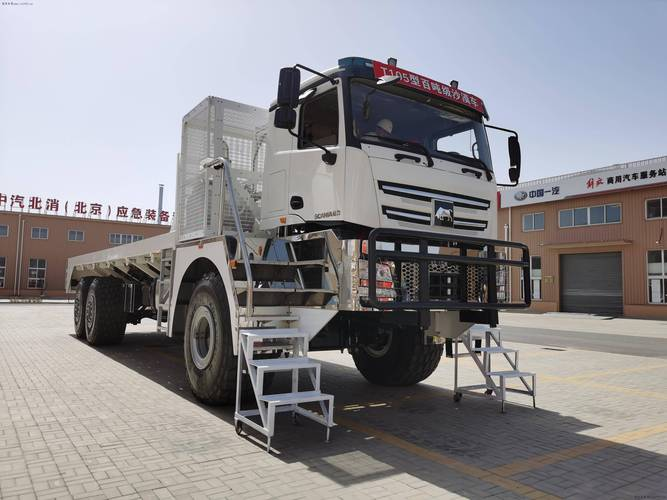
已交付 · 已核验 · 低清参考667×500 · 裕量 +0.0244 · 部件 side_guard,headlamp,wheel_arch,step · 交付包 否
keep 工程车 +0.3123 ／ drop 多车队列 +0.2879
视角 hero_45 · gap 0.0004 · 门卫 v4
长边 <800
分辨率/分层：长边 <800
https://img1.baidu.com/it/u=1608489552,2364136365&fm=253&fmt=auto&app=138&f=JPEG?w=667&h=5
710×300 · 裕量 +0.0427 · 部件 side_guard,headlamp,wheel_arch,step · 交付包 否
keep 单台重卡 +0.3292 ／ drop 多车队列 +0.2865
视角 rear · gap 0.0012 · 门卫 v4
长边 <800
分辨率/分层：长边 <800
https://a.zdmimg.com/202605/09/69fe5a5082beb5071.jpg_fo710.jpg
640×427 · 裕量 +0.1016 · 部件 side_guard,headlamp,wheel_arch,step · 交付包 是
keep 部件特写 +0.2909 ／ drop 网格拼图 +0.1893
视角 detail · gap 0.0290 · 门卫 v4
长边 <800
分辨率/分层：长边 <800
https://ss0.baidu.com/6ONWsjip0QIZ8tyhnq/it/u=3931654914,3908560493&fm=175&s=6E321DC3C9523
1200×800 · 裕量 +0.0945 · 部件 side_guard,headlamp,wheel_arch,step · 交付包 是
keep 部件特写 +0.3183 ／ drop 网格拼图 +0.2238
视角 detail · gap 0.0314 · 门卫 v4
https://img4.kcimg.cn/imgc/0/495/495521.jpg_1200x800.jpg
1200×800 · 裕量 +0.0859 · 部件 side_guard,headlamp,wheel_arch,step · 交付包 是
keep 部件特写 +0.2686 ／ drop 内饰舱 +0.1828
视角 detail · gap 0.0460 · 门卫 v4
https://img4.kcimg.cn/imgc/0/495/495541.jpg_1200x800.jpg
700×503 · 裕量 +0.0648 · 部件 side_guard,headlamp,wheel_arch,step · 交付包 是
keep 单台重卡 +0.3491 ／ drop 网格拼图 +0.2843
视角 hero_45 · gap 0.0047 · 门卫 v4
长边 <800
分辨率/分层：长边 <800
https://l.b2b168.com/2022/09/08/08/202209080845010360564.jpg
640×427 · 裕量 +0.0501 · 部件 side_guard,headlamp,wheel_arch,step · 交付包 是
keep 主体一台+背景车 +0.2699 ／ drop 多车队列 +0.2199
视角 front · gap 0.0010 · 门卫 v4
长边 <800
分辨率/分层：长边 <800
https://f11.baidu.com/it/u=2281618549,1034785405&fm=175&s=9B90DBA25F4132CA21BC2CA40300D083
750×589 · 裕量 +0.0217 · 部件 side_guard,headlamp,wheel_arch,step · 交付包 是
keep 工程车 +0.3094 ／ drop 网格拼图 +0.2877
视角 detail · gap 0.0089 · 门卫 v4
长边 <800
分辨率/分层：长边 <800
https://t12.baidu.com/it/u=3217457823,988999571&fm=199&app=68&f=JPEG&fmt=auto?w=750&h=589&
796×500 · 裕量 +0.0365 · 部件 side_guard,headlamp,wheel_arch,step · 交付包 否
keep 工程车 +0.3567 ／ drop 网格拼图 +0.3202
视角 detail · gap 0.0094 · 门卫 v4
长边 <800
分辨率/分层：长边 <800
https://img0.baidu.com/it/u=2017769711,2433748176&fm=253&fmt=auto&app=138&f=JPEG?w=796&h=5
714×500 · 裕量 +0.0347 · 部件 side_guard,headlamp,wheel_arch,step · 交付包 否
keep 主体一台+背景车 +0.3761 ／ drop 多车队列 +0.3414
视角 front · gap 0.0058 · 门卫 v4
长边 <800
分辨率/分层：长边 <800
https://img1.baidu.com/it/u=704763796,178285745&fm=253&fmt=auto&app=138&f=JPEG?w=714&h=500
1080×721 · 裕量 +0.0966 · 部件 side_guard,headlamp,wheel_arch,step · 交付包 是
keep 单台重卡 +0.2847 ／ drop 网格拼图 +0.1881
视角 hero_45 · gap 0.0122 · 门卫 v4
长边 <1200
分辨率/分层：长边 <1200
http://5b0988e595225.cdn.sohucs.com/images/20180224/d3ae06b40c964e0a894ceeb8a754e9e3.jpeg
1000×563 · 裕量 +0.0851 · 部件 side_guard,headlamp,wheel_arch,step · 交付包 是
keep 部件特写 +0.2818 ／ drop 网格拼图 +0.1967
视角 detail · gap 0.0091 · 门卫 v4
长边 <1200
分辨率/分层：长边 <1200
https://www.cntplus.com/wp-content/uploads/2022/04/图片-19.jpg?x-oss-process=image/resize,m_
660×372 · 裕量 +0.0802 · 部件 side_guard,headlamp,wheel_arch,step · 交付包 是
keep 单台重卡 +0.3508 ／ drop 网格拼图 +0.2705
视角 rear · gap 0.0027 · 门卫 v4
长边 <800
分辨率/分层：长边 <800
https://nimg.ws.126.net/?url=http%3A%2F%2Fdingyue.ws.126.net%2F2022%2F0422%2F1b8217c2j00ra
660×372 · 裕量 +0.0369 · 部件 side_guard,headlamp,wheel_arch,step · 交付包 是
keep 主体一台+背景车 +0.3946 ／ drop 多车队列 +0.3577
视角 rear · gap 0.0016 · 门卫 v4
长边 <800
分辨率/分层：长边 <800
https://nimg.ws.126.net/?url=http%3A%2F%2Fdingyue.ws.126.net%2F2022%2F0422%2F41585e42j00ra
1920×1279 · 裕量 +0.0185 · 部件 side_guard,headlamp,wheel_arch,step · 交付包 是
keep 单台重卡 +0.2913 ／ drop 多车队列 +0.2728
视角 side · gap 0.0074 · 门卫 v4
https://q3.itc.cn/q_70/images03/20250731/47cc970cd67e4ec28804cf445b7048b8.jpeg
600×447 · 裕量 +0.0556 · 部件 side_guard,headlamp,wheel_arch,step · 交付包 是
keep 单台重卡 +0.2726 ／ drop 多车队列 +0.2170
视角 front · gap 0.0004 · 门卫 v4
长边 <800
分辨率/分层：长边 <800
http://www.dfc123.com/prodpic/220224/001.jpg
668×500 · 裕量 +0.0522 · 部件 side_guard,headlamp,wheel_arch,step · 交付包 是
keep 单台重卡 +0.3454 ／ drop 多车队列 +0.2932
视角 hero_45 · gap 0.0046 · 门卫 v4
长边 <800
分辨率/分层：长边 <800
https://img1.baidu.com/it/u=3846173612,1330958641&fm=253&fmt=auto&app=138&f=JPEG?w=668&h=5
600×450 · 裕量 +0.0486 · 部件 side_guard,headlamp,wheel_arch,step · 交付包 是
keep 单台重卡 +0.2847 ／ drop 多车队列 +0.2362
视角 side · gap 0.0005 · 门卫 v4
长边 <800
分辨率/分层：长边 <800
http://www.dfc1688.com/d/file/p/2022/03-10/7f8962be1fea26ea561be36b81bee35e.jpg
600×449 · 裕量 +0.0413 · 部件 side_guard,headlamp,wheel_arch,step · 交付包 是
keep 单台重卡 +0.2805 ／ drop 多车队列 +0.2392
视角 front · gap 0.0047 · 门卫 v4
长边 <800
分辨率/分层：长边 <800
http://www.dfc123.com/prodpic/220224/002.jpg
664×442 · 裕量 +0.0323 · 部件 side_guard,headlamp,wheel_arch,step · 交付包 是
keep 主体一台+背景车 +0.3437 ／ drop 多车队列 +0.3113
视角 front · gap 0.0081 · 门卫 v4
长边 <800
分辨率/分层：长边 <800
https://img1.baidu.com/it/u=46332532,3582447451&fm=253&fmt=auto&app=138&f=JPEG?w=664&h=442
552×368 · 裕量 +0.0760 · 部件 side_guard,headlamp,wheel_arch,step · 交付包 否
keep 部件特写 +0.3657 ／ drop 多车队列 +0.2897
视角 hero_45 · gap 0.0065 · 门卫 v4
长边 <800
分辨率/分层：长边 <800
http://5b0988e595225.cdn.sohucs.com/images/20200416/fd8a8ce6b39f4923a2d46c8cc0ad1d03.jpeg
900×600 · 裕量 +0.0650 · 部件 side_guard,headlamp,wheel_arch,step · 交付包 否
keep 单台重卡 +0.3241 ／ drop 多车队列 +0.2591
视角 side · gap 0.0054 · 门卫 v4
长边 <1200
分辨率/分层：长边 <1200
http://p7.itc.cn/q_70/images03/20201007/a3852e2fc0d8424181aba6c44f5a5e51.jpeg
552×368 · 裕量 +0.0648 · 部件 side_guard,headlamp,wheel_arch,step · 交付包 否
keep 单台重卡 +0.3824 ／ drop 多车队列 +0.3176
视角 front · gap 0.0017 · 门卫 v4
长边 <800
分辨率/分层：长边 <800
http://5b0988e595225.cdn.sohucs.com/images/20200416/d7f6ff48d9f043d5b11fe0908913245a.jpeg
1080×810 · 裕量 +0.0420 · 部件 side_guard,headlamp,wheel_arch,step · 交付包 否
keep 单台重卡 +0.2987 ／ drop 多车队列 +0.2568
视角 side · gap 0.0005 · 门卫 v4
长边 <1200
分辨率/分层：长边 <1200
http://p1.itc.cn/q_70/images03/20201007/b5a50a5a456044afa1cb2c8c13a3370c.jpeg
799×556 · 裕量 +0.0411 · 部件 side_guard,headlamp,wheel_arch,step · 交付包 否
keep 单台重卡 +0.3553 ／ drop 客车 +0.3142
视角 front · gap 0.0030 · 门卫 v4
长边 <800
分辨率/分层：长边 <800
http://p3.itc.cn/q_70/images03/20200917/5cd06c30c7994011a199bfaf7c6ca995.jpeg
600×400 · 裕量 -0.0578 · 部件 side_guard,headlamp,wheel_arch,step · 交付包 否
keep 部件特写 +0.2590 ／ drop 内饰舱 +0.3168
视角 — · gap 0.0000 · 门卫 v4
CLIP 反例胜出
CLIP 拒绝：“内饰舱”胜出（-0.0578 = keep 部件特写 +0.2590 − drop 内饰舱 +0.3168）
http://5b0988e595225.cdn.sohucs.com/images/20200428/48cadede92ae4c14863fa6364d4be4ad.jpeg
934×500 · 裕量 +0.1181 · 部件 side_guard,headlamp,wheel_arch,step · 交付包 否
keep 工程车 +0.3883 ／ drop 多车队列 +0.2703
视角 rear · gap 0.0092 · 门卫 v4
长边 <1200
分辨率/分层：长边 <1200
https://img1.baidu.com/it/u=2168912892,1550516043&fm=253&fmt=auto&app=138&f=JPEG?w=934&h=5
800×422 · 裕量 +0.1002 · 部件 side_guard,headlamp,wheel_arch,step · 交付包 否
keep 工程车 +0.3860 ／ drop 多车队列 +0.2858
视角 hero_45 · gap 0.0035 · 门卫 v4
长边 <1200
分辨率/分层：长边 <1200
https://img2.baidu.com/it/u=3056396887,31253449&fm=253&fmt=auto&app=138&f=JPEG?w=800&h=422